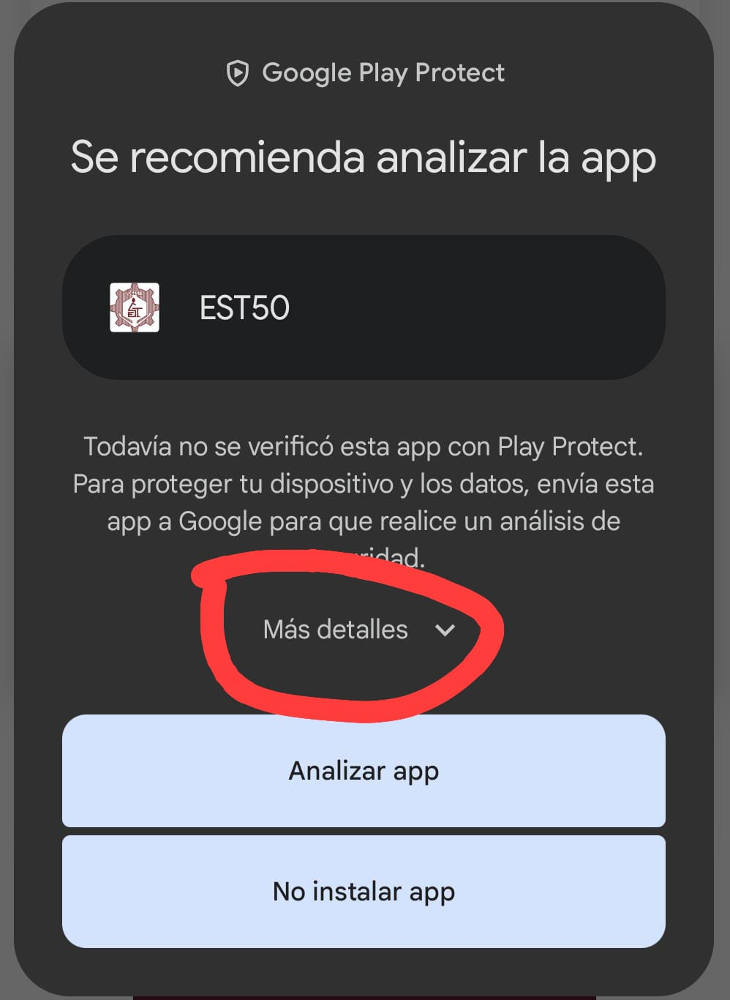
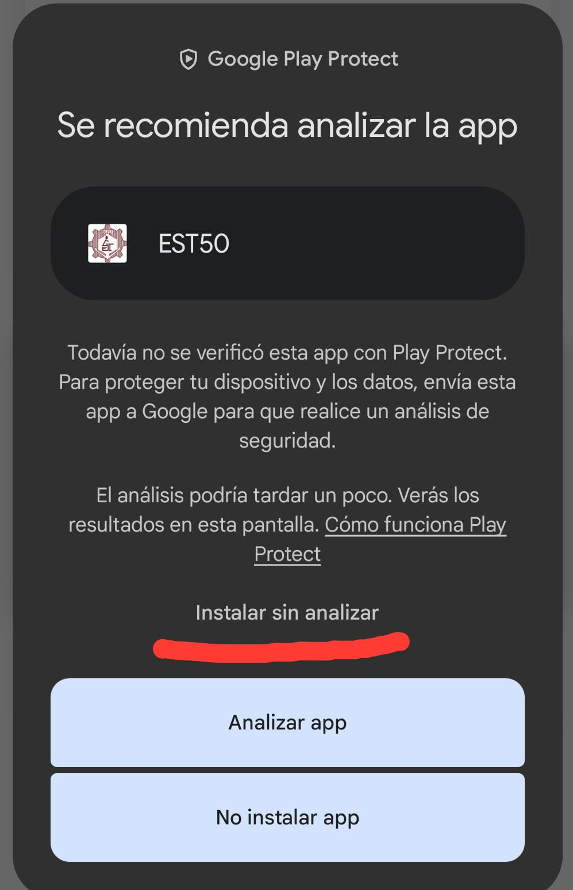

Aplicación donada por estudiantes del CBTis 224 para apoyar a los alumnos de nuevo ingreso de la Escuela Secundaria Técnica No. 50.
La aplicación fue desarrollada con el propósito de ayudar a los estudiantes de nuevo ingreso a prepararse académicamente mediante una guía de estudio interactiva.
✔ Español (14 temas)
✔ Matemáticas (14 temas)
✔ Biología (9 temas)
Cada tema incluye:
📚 Información explicativa
📝 Mini actividades
🎥 Videos informativos
🌐 Páginas de consulta
Además del contenido académico, la aplicación contiene información relevante sobre la Escuela Secundaria Técnica No. 50 para facilitar la adaptación de los estudiantes a su nueva etapa escolar.
La aplicación es completamente segura y está libre de virus. Debido a que es un proyecto escolar y se distribuye directamente en formato APK (sin estar publicada en la Google Play Store), tu teléfono mostrará un aviso de protección de Google Play Protect.
Para instalarla sin problemas, sigue estos dos sencillos pasos:
1. Cuando te aparezca el aviso en pantalla, toca en la opción que dice "Más detalles".

2. Se desplegará un texto adicional. Presiona en las letras que dicen "Instalar sin analizar" para comenzar la instalación.
